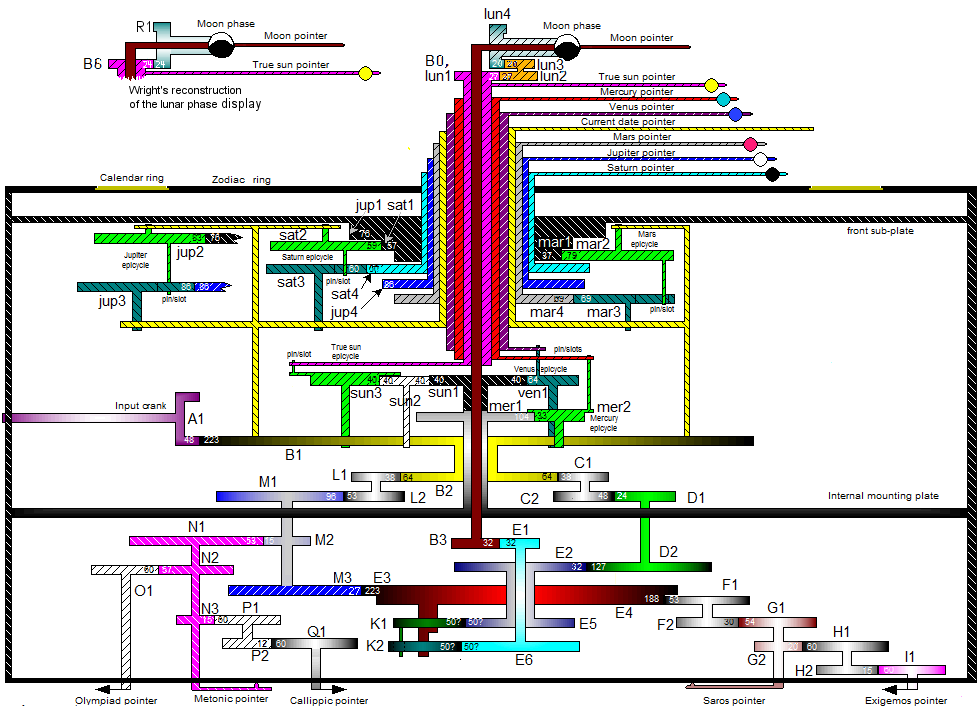

Cadranul frontal are două scale circulare concentrice. Scara interioară marchează semnele grecești ale zodiacului, cu împărțire în grade.
Cadranul Metonic este cadranul superior principal din spatele mecanismului. Ciclul metonic, definit în mai multe unități fizice, este de 235 de luni sinodice.
Mecanismul are o carcasă din lemn cu o ușă frontală și una din spate, ambele conținând inscripții. Ușa din spate pare a fi „manualul de instrucțiuni”.
Mecanismul este remarcabil prin nivelul de miniaturizare și complexitatea pieselor sale, care este comparabilă cu cea a ceasurilor astronomice din secolul al XIV-lea. Are cel puțin 30 de componente.
